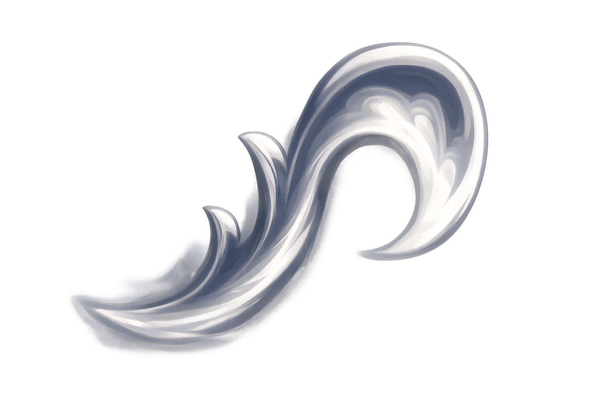
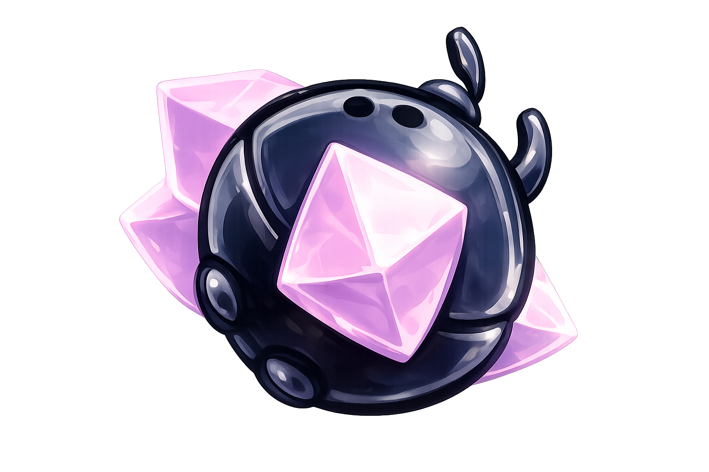
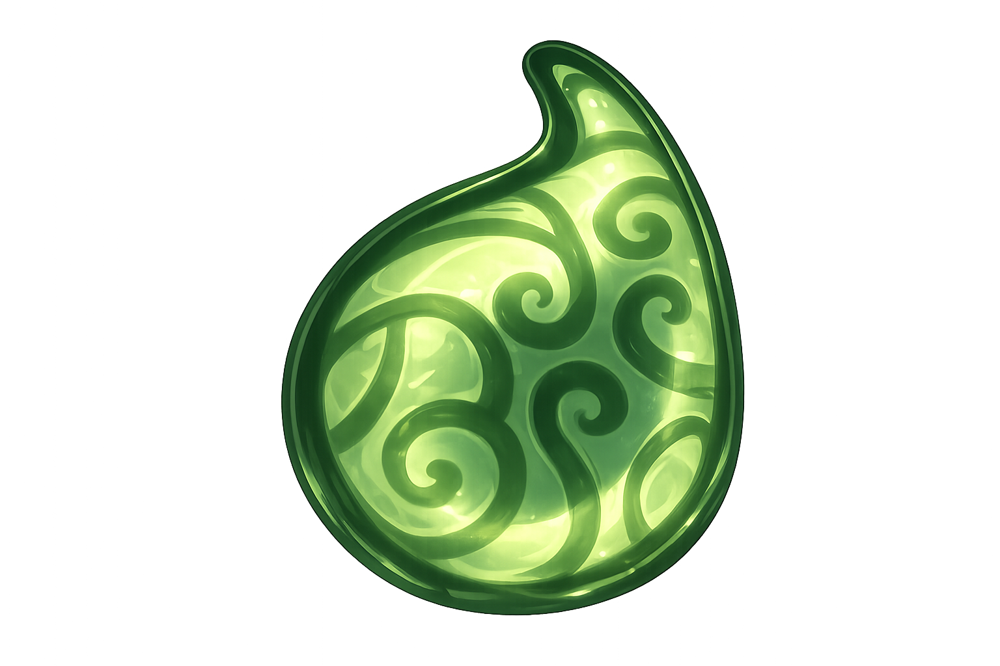
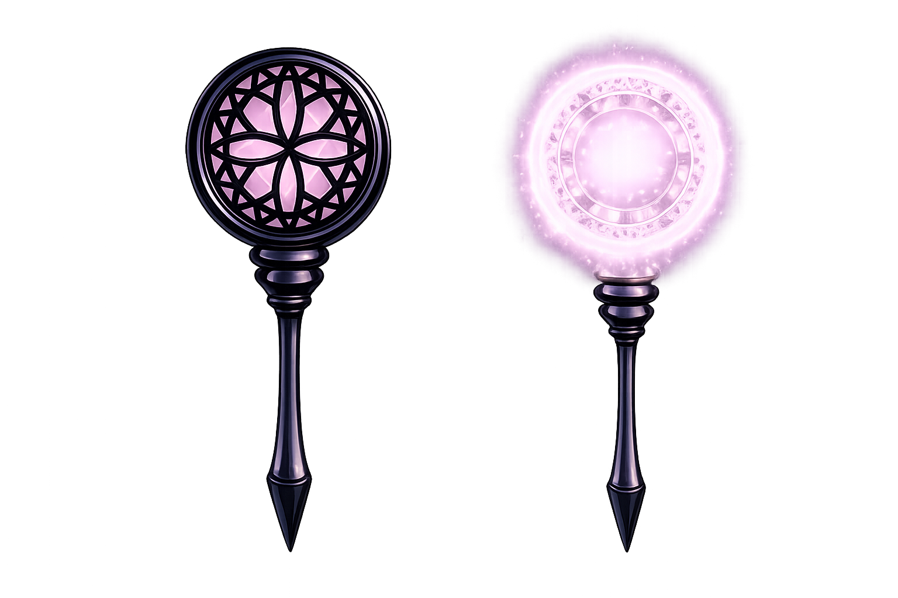

Capa de ala de Polilla
La "Capa de ala de Polilla" es una de las primeras habilidades que conseguiras en hollow knight, la cual es un impulso hacia adelante, se puede mejorar a la "Capa Sombría" la cual hace lo mismo, pero con la diferencia de que con esta mejora, podras atravesar enemigos y pilares de sombra, y hacer daño si llevas equipado un amuleto llamado "sombra afilada".

Garras de Mantis
Las Garras de Mantis permiten al Caballero aferrarse a las paredes y saltar desde ellas, otorgando una gran movilidad vertical y permitiendo alcanzar zonas que de otro modo serían inaccesibles. Es una herramienta esencial tanto para la exploración de áreas complejas como para evitar peligros en las plataformas.

Corazón de Cristal
El Corazón de Cristal otorga al Caballero la capacidad de realizar un potente impulso horizontal a través de grandes distancias, suspendido en el aire. Es una habilidad vital para cruzar abismos extensos y áreas donde las plataformas son demasiado escasas, transformando por completo la forma en que atraviesas el mapa.

Lágrima de Isma
La Lágrima de Isma es una habilidad pasiva que permite al Caballero resistir el daño del ácido. Con ella, podrás atravesar lagos y corrientes ácidas sin recibir daño, lo cual es indispensable para explorar zonas como los Jardines de la Reina y llegar a áreas secretas ocultas bajo el líquido corrosivo.

Aguijones Oníricos
Los Aguijones Oníricos permiten al Caballero entrar en la mente de otros personajes y acceder a zonas ocultas o recuerdos profundos. Además de revelar diálogos secretos y detalles de la historia del juego, esta habilidad es necesaria para recolectar esencia y desbloquear recompensas intersantes que te otorgaran la vidente en tierras de reposo al llegar a la meta que ella te pida, y al desbloquear el aguijon Onirico despierto (1800 de escencia) podras entrar al palacio blanco y acceder a las 2 zonas de parkour mas dificiles de todo el juego.
Sentido del Mundo
El Sentido del Mundo, permite al Caballero observar el porcenjate de finalización dentro del juego, escencial para sacar los logros como el del 112% para ver cuanto le falta para lograrlo.